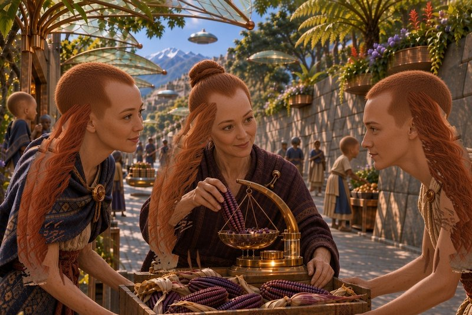
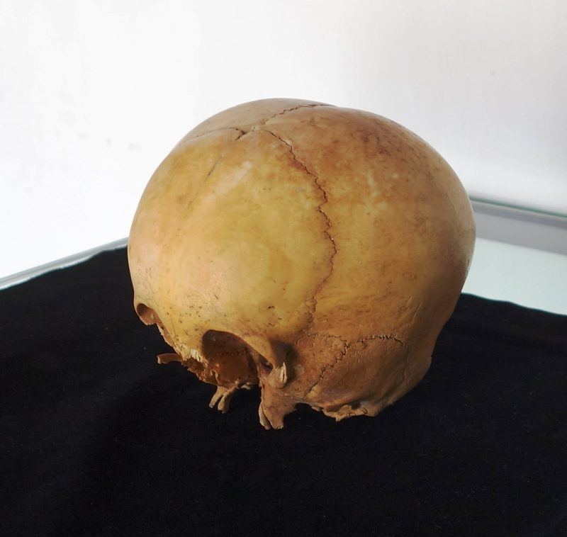

Stenstadens ansikten
Det är fiktion. AI-illustrationer av en inbillad stenstad. Varje par visar först Jani Korpis källmaterial och sedan en AI-illustration inspirerad av skallens kontur. Huvuddelen av källmaterialet är fotografier från Peru; par 02 är sammansatta från videofilmer, och par 12–13 innehåller videofram av Kairos skulpturer. Stenstaden och dess invånare är uppfunna.
En dag i stenstaden (fiktion)
Den här historien är påhittad. Den beskriver inte Perus eller Egyptens historia, och dess karaktärer har inget samband med de avlidna som ses på bilderna. Berättelsen binder samman de tretton illustrationerna som händelser på en inbillad dag.
Stenstaden är byggd i terrasser på en bergssida. Kanaler tar vatten från källor högre upp på sluttningen, och glasskärmar skymmer gränderna. Allt i staden är mätt: stenarna, vattenhöjden och ljusvinkeln. Mätning är ett gemensamt språk här.
Tre personer står i centrum för dagen. Optikern Ilun slipar prismerna som stadens landmätare använder för att läsa vinklar. Sava, vattentjänaren, ser till att varje terrass får sin del vatten. Vävaren Tiru gör skuggkläder som skyddar marknaden och trädgårdarna från middagssolen.
På morgonen märker Sava att för lite vatten når de lägsta terrasserna. Felet kan vara i en kanals lutning, en trasig ledning eller ett sluss. Under dagen letar staden tillsammans efter felet: en stenhuggare kontrollerar ledningarna, en trädgårdsmästare läser tecknen på torka i växterna och byggare tar med sig ett nytt glasskärm över det ställe där vattnet delas upp. På marknaden handlar folk med majs, korgar och nyheter.
På kvällen rinner vattnet igen. Tiru reparerar kanten på en skuggduk, och kanalmätaren sätter det sista slusset. Formerna kommer från Janis foton; händelserna, namnen och karaktärerna är uppfunna.
01 · Optikern justerar ett prisma


Handling (fiktion): Morgonen börjar i mätverkstaden. Ilun vrider ett prisma tills ljusstrålen når sitt mål. Sava kommer senare att läsa kanalens vinklar med samma prism, så arbetet måste göras innan solen går upp över terrasserna.
Utgångspunkt: Brynets bredd och avståndet mellan ögonhålen styrde formen på överdelen av ansiktet. Käken och munnen är illustratörens val.
Originalbild 01 och iakttagelser · Paren 04 och 10 kan visa samma föremål som detta par.
Läs mer om sidan och visa alla 13 par
Sidan bygger på Janis uppfattning om ett avancerat, fantasifullt samhälle som föregick människan. Skallorna på fotona är mänskliga rester. I det studerade Paracasmaterialet har det långa huvudet tolkats som formning som gjordes i barndomen; de enskilda detaljerna i de särskilda skallarna som Jani fotograferade har inte bekräftats. Stenstaden och dess invånare är uppfunna. Skallorna i källbilderna är mänskliga kvarlevor vars ursprung och samlingshistoria bara är delvis kända (se faktasidan). Det är därför de här människorna inte framställs på illustrationerna, och skullbilderna tjänar här bara som utgångspunkt för former. Det AI-verktyg som användes för illustrationerna har inte registrerats i bilddata. Det kopparröda vågade håret, den betona övre delen av skallen och baksidan av huvudet, de stora ögonen och den lilla hakan och näsan är konstnärliga val inspirerade av Amarna-konsten. Illustrationen är inte en ansiktsrekonstruktion, inte heller ett forskningsresultat om ögon- eller hårfärg.
Varje par visar först Janis fotografi och bredvid eller under den en AI-illustration Inspirerad av skallets kontur, det vill säga fiktion. Numret kopplar fotot till illustrationen. Nedre käken saknas ofta på källbilderna, så käken och munnen är illustratörens beslut. Figurernas ansiktsuttryck, hudfärg, hår och vardag tillhör stenstaden. Illustrationen kan inte berätta om den avlidnes ansiktsdrag, art eller utseende.
Vad berättar skallarna?Faktasida: bilderna 01–11, utställningstexter och publicerad forskning.
02 · En stenlast färdas genom gränden


Handling (fiktion): En last av sten rör sig längs en smal gränd mot den lägsta terrassen. Föraren vet bara att nya block behövs för kanalens kant före kvällen. Ingen vet ännu var felet är.
Utgångspunkt: Figurens panna stiger ganska upprätt. Modellen var den bleka skallen i den övre raden av videokompilationen.
03 · Stenhuggaren kontrollerar en fog


Handling (fiktion): En stenhuggare studerar en gammal del av kanalen genom en lins. Stället är bra. Hon skickar ett meddelande till Sava: Felet ligger inte i stenen utan någonstans högre upp.
Utgångspunkt: I den sidovisning som vänds åt höger är den viktigaste formen linjen från pannan till baksidan av huvudet.
04 · Trädgårdsmästaren undersöker en fröskida


Handling (fiktion): På den lägsta terrassen öppnar en trädgårdsmästare en frökupp och ser att den har torkat för tidigt. Han säger att det har kommit mindre vatten på flera dagar.
Utgångspunkt: Den runda formen på foto 01 återkommer i den övre delen av ansiktet. Händerna hjälper till att bedöma proportioner på källbilden.
Originalbild 04 och iakttagelser · Paren 01 och 10 kan visa samma föremål som detta par.
05 · Vattenhållare mäter kanalens vattennivåer


Handling (fiktion): Sava sätter ett jämningsinstrument på kanten av kanalen och mäter höjdskillnaderna punkt för punkt. Mätningen visar att kanalen lutar åt rätt håll. Så felet måste vara vid delningspunkten eller i ett sluss.
Utgångspunkt: Utgångspunkten var den vänstervända profilen av skallen i förgrunden. Krökningen av bakhuvudet fortsätter bakom örat.
06 · Väverskorna granskar ett tyg


Handling (fiktion): Vävarna håller ett tunt tyg upp mot ljuset. Tiru behöver en skuggklädnad över skiljepunkten så att vattnet inte förångas i midnattens hetta. Tyget måste vara lätt men tätt.
Utgångspunkt: Kronan på den vänstra skallen lutar bakåt. Konturen på den högra stiger mer upprätt.
07 · Ett möte på majstorget



Handling (fiktion): På majsmarknaden handlar tre stadsbor med varor och nyheter. Ett rykte om vattenbrist har gått runt hela morgonen. Marknaden är överens om att byggare ska ta med sig ett nytt glasskärm till skiljepunkten.
Utgångspunkt: De tre vinklarna gav idén till tre olika ansikts konturer. Den medelmåttliga marknadspersonen föreställer sig som en vuxen.
08 · Två byggare bär en glasskärm genom porten


Handling (fiktion): Två byggare bär en böjd glasskärm genom porten. Den är tung och bräcklig, så de går långsamt och tittar på varandra vid varje steg.
Utgångspunkt: Den vänstra skallets mer upprätta form och den högra skallens mildare pannlinje syns bäst genom att jämföra sidorna.
09 · Vattenhjulets ton


Handling (fiktion): Vattenhjulet låter fel. Sava och hennes hjälpare lyssnar på den och hittar en fast port vid skiljepunkten. När grindarna frigörs förändras hjulns ton och vattnet börjar röra sig.
Utgångspunkt: Den olika lutningen på vänster och höger huvud ger ansikten till två invånare som böjer sig över vattenhjulet.
10 · Flöjtspelaren i stengränden



Handling (fiktion): När vattnet flödar igen lämnar Ilun sin verkstad och spelar en signal på sin flöjt i gränden, en signal som hela backen känner till. De övre terrasserna svarar med samma melodi.
Utgångspunkt: Vid sidan visas den runda kronan och kanten av ögonhålan. Formen på spelarens läppar och käke är föreställd.
Originalbild 10 och iakttagelser · Paren 01 och 04 kan visa samma föremål som detta par.
11 · Korgbyte i terrasstaden


Handling (fiktion): På terrasserna byter folk korgar. Trädgårdsmästaren skickar de första räddade växterna till marknaden, och frukten kommer tillbaka från den angränsande terrassen.
Utgångspunkt: De många konturerna i vitrinet gav upphov till en stadsutsikt. Invånarna i förgrunden var utformade för denna scen.
12 · Väverskan lagar en skuggduk

Titta på hjässans båge, pannans linje och hur långt bakhuvudet når. Exakta proportioner kan inte jämföras mellan bilder tagna från olika håll. Nedan illustratörens tolkning.

Handling (fiktion): När kvällen faller, reparerar Tiru kanten på skuggan. Den skyddade skiljepunkten hela eftermiddagen, och vinden rev ett litet hål i hörnet. Hon drar i tråden innan det blir mörkt.
Öppna den peruanska originalbilden som används i jämförelsen
13 · Kanalmätaren justerar en sluss

Titta på hjässans båge, pannans linje och hur långt bakhuvudet når. Exakta proportioner kan inte jämföras mellan bilder tagna från olika håll. Nedan illustratörens tolkning.

Handling (fiktion): Slutligen ställer kanalmätaren in slusset för natten och registrerar dagens mätningar för Sava. På morgonen kommer Iluns prism att kontrollera om vinklarna håller över natten.
Öppna den peruanska originalbilden som används i jämförelsen
Kairos stenansikten och Perus skallar
Amarnahuvudena är skulpturer, och museerna beskriver den långsträckta hjässan som ett stildrag i Amarnakonsten (Global Egyptian Museum, JE 44869 · Egyptiska museet i Berlin, ÄM 14145). De peruanska skallarna är mänskliga kvarlevor; i det undersökta Paracasmaterialet har det långa huvudet tolkats som formning gjord i barndomen (forskningsbakgrund). Kopplingen mellan dem är bara visuell.
Paren 12 och 13 ställer stenhuvudena som Jani filmade på Egyptiska museet i Kairo den 15 februari 2024 bredvid de peruanska skallbilderna och stenstadens gestalter. Kairos källbilder är utsnitt av stillbilder ur Janis video (museirundtur från 51:31). Utomståendes ansikten har suddats ut. Kairobilderna och forskningsbakgrunden finns också på faktasidan: Kairo 2024.
Föremålsnumren går inte att urskilja i Janis bildrutor, så museets föremålskort är en jämförelsepunkt och ingen identifiering. I Egyptiska museets i Kairo samling finns kvartsithuvudet JE 44869 som hittades i Tell el-Amarna och som enligt Global Egyptian Museum sannolikt är Meritaten, Akhenatons äldsta dotter. Tyska Deutsche Orient-Gesellschaft grävde fram det 1912 ur bildhuggaren Thutmoses verkstad (Global Egyptian Museum). Ett stenansikte av en Amarnaprinsessa av samma typ finns också i New York (The Met, Head of a princess from a group statue). Kairomuseets eget föremålskort: Head of Princess, daughter of Akhenaten.
Samma utställning i den peruanska videon

Den delade funktionen hjälper till att identifiera skärmen. Den exakta platsen för hittandet och identiteten av föremålen i vitrinet förblir öppna. Foto 09 på faktasidan.
Ett annat exempel från Amarna: familjereliefen i Berlin

Familjereliefen i Berlin visar hur kungafamiljens sidoprofiler också framställdes inristade i en plan stenyta. Döttrarnas hjässor förlängs bakåt. Enligt museet är draget ett rent stilgrepp och inte ett tecken på en ärftlig eller avsiktligt framkallad form (museets beskrivning av reliefen, på engelska).
Gestalternas miner, hudton, hår och vardag hör till den påhittade stenstaden. En del av fotografierna visar samma föremål från olika håll.